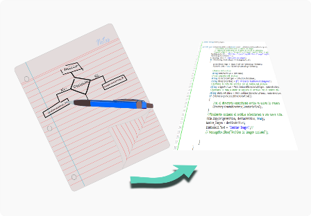
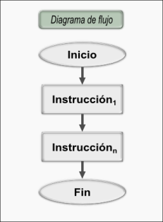
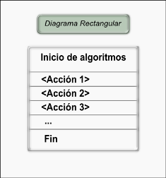
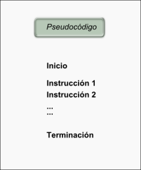
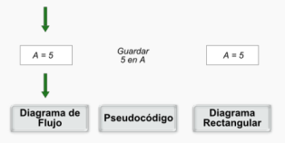

Capítulo III - Programación estructurada

En general, los lenguajes de programación de computadores cuentan con ciertas estructuras básicas para hacer que el ordenador realice tareas como la definición de variables para almacenar información, tomar decisiones en función de sus necesidades o repetir procedimientos según se requiera.
Estas estructuras básicas de los algoritmos las estudiaremos y las aplicaremos en códigos específicos usando Python como lenguaje de práctica de estas instrucciones.
Objetivos de aprendizaje
- Conocer y usar formas de describir algoritmos de computador.
- Comprender la asignación y definición de variables.
- Comprender las estructuras de decisión en algoritmos.
- Comprender las estructuras de ciclos en algoritmos.
- Aplicar estructuras de asignación en Python.
- Programar estructuras de decisión en Python.
- Programar estructuras de ciclos en Python.
Subtemas del capítulo
Los algoritmos y las formas de representación
El algoritmo lo podemos definir como una secuencia de actividades que se deben realizar para lograr un objetivo. Retomando lo discutido en el capitulo II, el algoritmo es la etapa de planeación que realizamos para solucionar nuestro problema. Los algoritmos los podemos enmarcar en el tema general de representación del conocimiento (en inglés knowledge representation) y describe lo más detallado posible un procedimiento para seguir.
En programación de computadores, el objetivo del algoritmo es describir un procedimiento que más adelante será codificado o escrito en un lenguaje de programación. Las representaciones de los algoritmos son en general independientes de los lenguajes que se van a usar y presentaremos las más usadas (Barrueto, 2011):
- Diagramas de flujo ( en inglés Flowchart)
- Diagramas rectangulares
- Pseudocódigo
Los Diagramas de flujo describen el algoritmo con figuras geométricas que representan una actividad específica y con flechas que conectan las figuras geométricas definiendo la secuencia que se va a seguir de las actividades.

La figura (GALEANO, 2011l) muestra una secuencia básica de actividades y las flechas que definen su orden de realización. Veremos en cada una de las diferentes estructuras o comandos de control su respectiva representación geométrica. La referencia (Chapra, 2002; Landau, 2008) muestra algunas de las convenciones de las geometrías usadas en los diagramas de flujo.
Los Diagramas rectangulares, también conocidos como diagramas de Nassi - Schneiderman (Barrueto, 2011), describen el algoritmo usando una secuencia de rectángulos que se lee desde la parte superior y continúan hacia abajo las actividades subsecuentes. Estos diagramas, a diferencia de los diagramas de flujo, no usan convenciones de figuras geométricas y presentan sin usar flechas los pasos consecutivos del algoritmo. La Imagen (GALEANO, 2011m), muestra un esquema básico de un diagrama rectangular.

La representación en Pseudocódigo simplemente describe en palabras del lenguaje cotidiano las actividades o instrucciones que se van a realizar. La Imagen (GALEANO, 2011n) muestra un esquema de un pseudocódigo (Barrueto, 2011; Larrosa, 2011; Chapra, 2002; Landau, 2008).

Un aspecto importante es que los algoritmos describen una secuencia de actividades o de instrucciones, y ese orden de realización es muy importante y no necesariamente son conmutables. Se debe poner especial atención en estas secuencias como unidades básicas de programación.
 )
)Instrucciones y comando de control en programación
Iniciamos presentando los comandos básicos que se utilizan en la programación secuencial y que cada lenguaje de programación tiene su forma particular o palabra clave para describir esta acción. Los siguientes son los grupos de instrucciones que discutiremos:
- Asignación (aritmética, lógica, variable, constante).
- Decisión lógica: (funcionamiento y ejemplos. (if))
- Ciclos: (do, while, Rompimientos)
La asignación es la manera de dar un nombre a una información determinada en el ambiente de programación. La Imagen (GALEANO, 2011o) muestra cómo se simboliza en cada uno de los métodos de descripción de algoritmos. El significado en palabras de esta instrucción es que el valor o dato 5 lo guarde en alguna posición de memoria del ordenador y lo pueda recordar nombrando la letra A. Este dato o información podrá ser usado posteriormente para realizar alguna operación, también puede ser reemplazado por otro dato.

En lenguaje de programación PYTHON (Python, 2011b), el símbolo igual = se utiliza para codificar la instrucción de asignación:
En esta instrucción PYTHON hace distinción entre las letras mayúsculas y minúsculas para nombrar una información. El nombre que está a la izquierda del signo igual puede tener más letras o números, pero no se debe utilizar palabras que el lenguaje tiene reservadas para otras instrucciones. Lo que está a la derecha del signo igual es la información que será guardada y puede ser de diferentes tipos.
Nota: A continuación se encuentran las referencias bibliográficas utilizadas para la construcción de los contenidos de este capítulo: